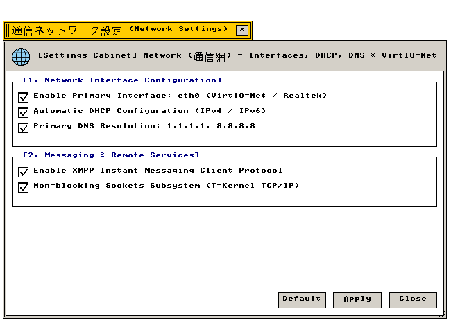

通信網設定 (Network)
VirtIO-Net · IPv4/IPv6 · DHCP/DNS · XMPP分散通信
ネットワークインターフェース、IPv4/IPv6スタック、DNSリゾルバ、分散タスク通信の設定仕様
"Network interface registers, dual-stack IPv4/IPv6 sockets, DNS resolvers, and distributed task messaging."
← 設定フォルダ (Settings Folder Index)
通信網設定（Network） — ネットワークデバイス（VirtIO-Net/Ethernet）、IPv4 DHCP、IPv6 SLAAC、DNS名前解決、XMPP分散通信パラメータを管理する設定アプレット。
"Network stack subsystem: packet driver configuration, dynamic IP leasing, address translation, and real-time socket endpoints."
画面プレビュー (Screen Preview)

実機描画フレームバッファより自動抽出された透過通信網設定ウィンドウ (Native Headless GDEV Capture)
概要 (Overview)
ネットワークデバイス（VirtIO-Net/Ethernet）、IPv4 DHCP、IPv6 SLAAC、DNS名前解決、XMPP分散通信パラメータを管理する設定アプレット。
"Network stack subsystem: packet driver configuration, dynamic IP leasing, address translation, and real-time socket endpoints."
基本操作仕様 (Operational Specifications)：
・[標準 (Default)]：工場出荷時の初期設定に復元します。
・[適用 (Apply)]：設定変更を確定し、システム状態へ反映します。
・[閉じる (Close)]：設定ウィンドウを破棄します（cls_wnd()）。
1. ネットワークインターフェースとIPスタック (Interfaces & Protocol Stacks)
物理・仮想NICドライバおよびIPv4/IPv6デュアルスタックの設定仕様。
"Ethernet interface driver bindings and dual-stack IP address negotiation."
| 設定項目・機能名 |
動作概要と視覚仕様 (Functional Specification) |
技術仕様・幾何学構造 (Technical / C99 Definition) |
Enable Primary Interface (eth0 / VirtIO-Net)
主要通信ポート有効化 |
イーサネットコントローラ（VirtIO-Netまたは物理NIC）をアクティブ化し、パケット送受信を開始します。 |
デバイス: eth0 (VirtIO-Net)
C99: g_state_network.checks[0] |
Automatic IPv4 Configuration via DHCP
IPv4 DHCP 自動取得 |
DHCPサーバーからIPv4アドレス、サブネットマスク、デフォルトゲートウェイを自動ネゴシエーションします。 |
プロトコル: DHCP DISCOVER/OFFER
C99: g_state_network.checks[1] |
Static IPv6 Stateless Autoconfiguration (SLAAC)
IPv6 SLAAC アドレス自動生成 |
ルーター広告（RA）プレフィックスに基づき、リンクローカルおよびグローバルIPv6アドレスをステートレス生成します。 |
プロトコル: ICMPv6 Router Discovery
C99: g_state_network.checks[2] |
Primary Domain Name System Resolver
DNS リゾルバ |
ホスト名・ドメイン名をIPアドレスへ変換するリゾルバサーバー（1.1.1.1 / 8.8.8.8）を指定します。 |
ポート: UDP 53
C99: g_state_network.checks[3] |
Enable Distributed Task Communication & XMPP
BTRON分散通信・XMPP |
ノード間での実身共有およびXMPPプロトコルによる分散メッセージングパイプラインを有効化します。 |
サービス: src/apps/chat.c
C99: g_state_network.checks[4] |
3. 全設定パラメータ仕様一覧 (Configuration Parameter Specifications)
通信網設定が提供するすべての設定要素、初期値、およびC99内部シンボル。
"Comprehensive parameter specification table: indexing all UI widget states, factory defaults, and underlying C99 data symbols."
| セクション |
パラメータ名 / UI要素 |
標準値 (Default) |
設定値 / 選択肢 |
C99 内部変数・シンボル |
| [1] 通信・IPスタック |
Primary Interface (eth0) |
有効 (TRUE) |
チェックボックス |
g_state_network.checks[0] |
| [1] 通信・IPスタック |
IPv4 DHCP Auto |
有効 (TRUE) |
チェックボックス |
g_state_network.checks[1] |
| [1] 通信・IPスタック |
IPv6 SLAAC |
有効 (TRUE) |
チェックボックス |
g_state_network.checks[2] |
| [1] 通信・IPスタック |
DNS Resolver |
有効 (TRUE) |
チェックボックス |
g_state_network.checks[3] |
| [1] 通信・IPスタック |
Distributed Task & XMPP |
有効 (TRUE) |
チェックボックス |
g_state_network.checks[4] |
| アクション制御 |
[ 標準 (Default) ] |
— |
初期設定へ復元 |
全フラグTRUEリセット |
| アクション制御 |
[ 適用 (Apply) ] |
— |
変更確定と再描画 |
is_dirty = FALSE, redraw_all_windows() |
| アクション制御 |
[ 閉じる (Close) ] |
— |
ウィンドウ破棄 |
cls_wnd(wnd) |
関連コンポーネント (Related Components)